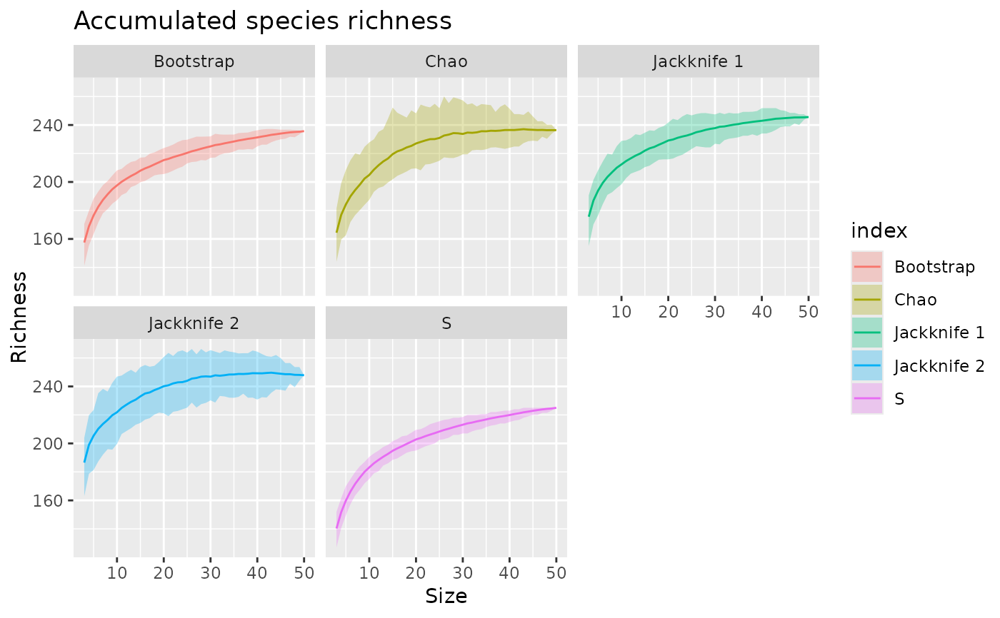

ggplot-based plot for objects of class "poolaccum"
autoplot.poolaccum.RdProduces a multi-layer ggplot object representing the output of objects produced by poolaccum.
# S3 method for poolaccum
autoplot(
object,
facet = TRUE,
ribbon = facet,
ncol = NULL,
ribbon.alpha = 0.3,
xlab = "Size",
ylab = "Richness",
title = "Accumulated species richness",
subtitle = NULL,
caption = NULL,
...
)Arguments
| object | an object of class |
|---|---|
| facet | logical; should extrapolated richness estimators be shown in separate facets? |
| ribbon | logical; show the quantile-based uncertainty interval? Uses |
| ncol | numeric; if facetting the plot, how many columns to use. Default arguuments will result in three columns. |
| ribbon.alpha | numeric; alpha transparency used for the uncertainty interval. Passed to the |
| xlab | character; label for the x axis. |
| ylab | character; label for the y axis. |
| title | character; title for the plot. |
| subtitle | character; subtitle for the plot. |
| caption | character; caption for the plot. |
| ... | additional arguments passed to |
Value
A ggplot object.
Author
Didzis Elferts & Gavin L. Simpson
Examples
data(BCI)
pool <- poolaccum(BCI)
autoplot(pool)
#> Warning: `ncol` is missing or less than 1 and will be treated as NULL.

## Turn off facetting; turns off ribbon too
autoplot(pool, facet = FALSE)